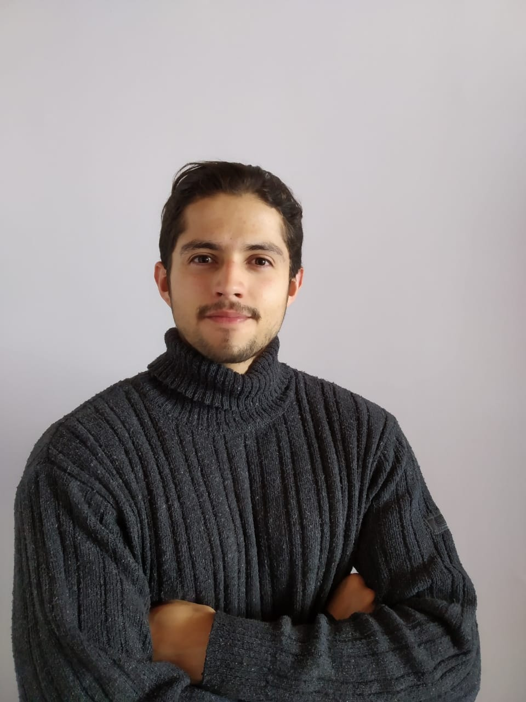

Diseñador industrial con habilidades para investigar, analizar, concebir proponer y diseñar productos. Contando con experiencia desde su ejecución hasta su finalización. Desarrollando conceptos de innovación en diferentes areas de producto, aplicando usos de conocimiento (ergonomía, emoción, interacción). Con 5 años de manejo de programas en modelado 3d (rhinoceros, inventor, autocad) interpretación de planos mecanicos y servicio al cliente.